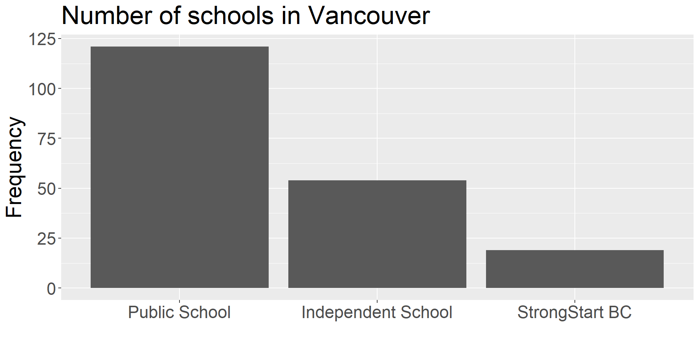
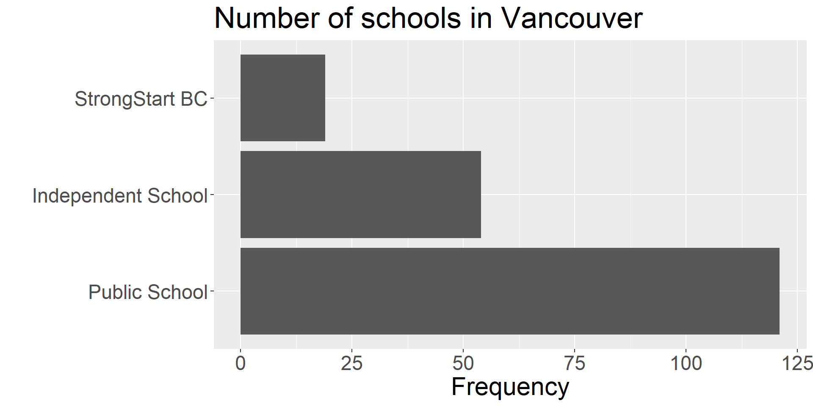

| School Category | n |
|---|---|
| Independent School | 54 |
| Public School | 121 |
| StrongStart BC | 19 |
STAT 200 - Lecture 2
One of the most critical steps when studying a new problem and data set.
EDA helps us to:
| School Category | n |
|---|---|
| Independent School | 54 |
| Public School | 121 |
| StrongStart BC | 19 |


Avoid using pie charts;
When you have many slices and/or the slices are roughly the same size, it becomes impossible to read.
In general, Bar Charts are much easier to read than Pie Charts – so stick with them.
Appropriate for summarizing the counts of two categorical variables;
Facilitates the analysis of the relationship between two categorical variables;
| Drug | Heart Attack | No Heart Attack | Total |
|---|---|---|---|
| Aspirin | 104 | 10,933 | 11,037 |
| Placebo | 189 | 10,845 | 11,034 |
| Total | 293 | 21,778 | 22,071 |
The study was reported on the front page of the New York Times on January 27, 1988. (See the article here.)
| Drug | Heart Attack | No Heart Attack | Total |
|---|---|---|---|
| Aspirin | 104 | 10,933 | 11,037 |
| Placebo | 189 | 10,845 | 11,034 |
| Total | 293 | 21,778 | 22,071 |
| Heart Attack | No Heart Attack |
|---|---|
| 293 (1.33%) | 21,778 (98.67%) |
Answer: 98.67%
| Drug | Heart Attack | No Heart Attack | Total |
|---|---|---|---|
| Aspirin | 104 | 10,933 | 11,037 |
| Placebo | 189 | 10,845 | 11,034 |
| Total | 293 | 21,778 | 22,071 |
| Aspirin | Placebo |
|---|---|
| 11,037 (50%) | 11,034 (50%) |
Answer: 50%
| Drug | Heart Attack | No Heart Attack | Total |
|---|---|---|---|
| Aspirin | 104 | 10,933 | 11,037 |
| Placebo | 189 | 10,845 | 11,034 |
| Total | 293 | 21,778 | 22,071 |
| Aspirin | Placebo |
|---|---|
| 104 (35.49%) | 189 (64.51%) |
Answer: 35.49%
Note that we fix the condition of occurrence of heart attack and look at the distribution of drug type.
| Drug | Heart Attack | No Heart Attack | Total |
|---|---|---|---|
| Aspirin | 104 | 10,933 | 11,037 |
| Placebo | 189 | 10,845 | 11,034 |
| Total | 293 | 21,778 | 22,071 |
| heart attack | no heart attack |
|---|---|
| 104 (0.94%) | 10,933 (99.06%) |
Answer: 0.94%
Note that we fix the condition of drug type and look at the distribution of occurrence of heart attack.
| Drug | Heart Attack | No Heart Attack | Total |
|---|---|---|---|
| Aspirin | 104 | 10,933 | 11,037 |
| Placebo | 189 | 10,845 | 11,034 |
| Total | 293 | 21,778 | 22,071 |
Answer:
heart attacks in the placebo and aspirin groups;| Drug Type | Heart Attack | No Heart Attack | Total |
|---|---|---|---|
| Aspirin | 104 | 10,933 | 11,037 |
| Placebo | 189 | 10,845 | 11,034 |
| Total | 293 | 21,778 | 22,071 |
aspirin who had a heart attack:placebo who had a heart attack:aspirin who had a heart attack: placebo who had a heart attack: Consider two over-the-counter topical ointment brands (Brand A and Brand B) for treating eczema. Eczema patients who have used either brand were asked about the effectiveness of the ointments (whether or not the eczema is cured within two weeks). The results are summarized in the table below:
| Eczema | |||
|---|---|---|---|
| Ointment Brand | Cured | Not Cured | Total |
| Brand A | 100 (40%) | 150 (60%) | 250 (100%) |
| Brand B | 200 (50.0%) | 200 (50.0%) | 400 (100%) |
| Total | 300 (46.2%) | 350 (53.8%) | 650 (100%) |
viewof count = {
let input = Inputs.range([0, 400],
{value: 200,
step: 1,
label: "# patients cured after using Brand B"});
d3.select(input).select('input[type="number"]').style("display", "none");
d3.select(input).style("font-size", "0.55em").style('width', '100%');
d3.select(input).select("label").style('width', '35%');
//d3.select("#test").style("width", '35%');
return input;
}
update_entry = (view) => {
let cell_independent = document.querySelector('#independent-cell');
let cell_dependent = document.querySelector('#dependent-cell');
let cell_total_independent = document.querySelector('#total-column-independent');
let cell_total_dependent = document.querySelector('#total-column-dependent');
cell_independent.textContent = `${view} (${(100 * view / 400).toFixed(1)}%)`;
cell_dependent.textContent = `${400 - view} (${(100*(400 - view)/400).toFixed(1)}%)`;
cell_total_independent.textContent = `${100 + view} (${(100*(100 + view)/650).toFixed(1)}%)`;
cell_total_dependent.textContent = `${150 + (400 - view)} (${(100*(150 + (400 - view))/650).toFixed(1)}%)`;
}Eczema among people who used Brand A ointment
data = [
{"X": "Brand A", "Eczema": "Cured", "Frequency": 100, "Proportion": 100 / (100 + 150)},
{"X": "Brand A", "Eczema": "Not cured", "Frequency": 150, "Proportion": 150 / (100 + 150)},
{"X": "Brand B", "Eczema": "Cured", "Frequency": count, "Proportion": count / 400},
{"X": "Brand B", "Eczema": "Not cured", "Frequency": 200, "Proportion": (400 - count) / 400}]
barPlot = Plot.plot({
x: {
//axis: null,
domain: data.Y,
//range: [150, 300]
},
y: {
grid: true,
domain: [0, 1]
},
marks: [
Plot.barY(data.filter(d => d.X == 'Brand A'), {x: "Eczema", y: "Proportion", fill: "X", title: "X"}),
Plot.ruleY([0])
],
style: {
fontSize: '.45em',
},
height: 290,
width: 478,
marginLeft: 50,
marginRight: 50,
marginTop: 50,
marginBottom: 50,
});Eczema among people who used Brand B ointment
Plot.plot({
x: {
domain: data.Y,
},
y: {
grid: true,
domain: [0, 1]
},
marks: [
Plot.barY(data.filter(d => d.X == 'Brand B'), {x: "Eczema", y: "Proportion", fill: "X", title: "X"}),
Plot.ruleY([0])
],
style: {
fontSize: '.45em',
},
height: 290,
width: 478,
marginLeft: 50,
marginRight: 50,
marginTop: 50,
marginBottom: 50,
});Does race affect the chance of receiving a death penalty sentence in Florida?
Radelet (1981) examined data on homicide indictments in 20 Florida counties between 1976 and 1977.
| Death Penalty | |||
|---|---|---|---|
| Race | Yes | No | Total |
| White | 19 | 141 | 160 |
| Black | 17 | 149 | 166 |
| Total | 36 | 290 | 326 |
Death Penalty sentences grouped per victims’ races
| Death Penalty | |||
|---|---|---|---|
| Race | Yes | No | Total |
| White | 19 | 132 | 151 |
| Black | 11 | 52 | 63 |
| Total | 30 | 184 | 214 |
| Death Penalty | |||
|---|---|---|---|
| Race | Yes | No | Total |
| White | 0 | 9 | 9 |
| Black | 6 | 97 | 103 |
| Total | 6 | 106 | 112 |
© 2023 Rodolfo Lourenzutti & Eugenia Yu – Material Licensed under CC By-SA 4.0